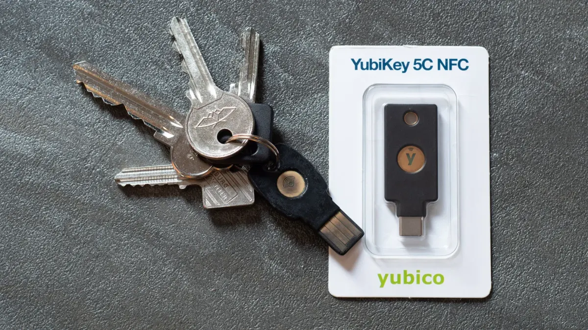

Passkeys are not magic - but they are the right move

The NCSC has published a detailed comparison of traditional login credentials and FIDO2 credentials such as passkeys. The short version for business owners is simple: passwords plus codes are still too easy to phish, and passkeys are a serious improvement.
That does not mean passkeys remove every risk. It means the risk moves. Instead of worrying mainly about stolen passwords and fake login pages, you need to think about device security, account recovery, credential managers, and how people regain access when something goes wrong.
Why this matters to SMEs
Most small businesses still rely on a mix of passwords, SMS codes, authenticator apps, and push approvals. That setup feels familiar, but attackers understand it very well. They can trick staff into entering codes, proxy a login through a fake page, or exhaust someone with approval prompts until they click accept.
The NCSC paper is focused on personal use, but the business lesson is hard to ignore. If your staff use personal email, cloud tools, banking apps, social accounts, supplier portals, or shared admin accounts, those personal and business boundaries blur quickly. A compromised personal account can become a route into company data, payment fraud, impersonation, or password resets for other services.
Passkeys help because they are bound to the real website or app. A fake login page cannot simply collect a passkey in the way it can collect a password or one-time code. That is the main security win: they make common phishing far less useful.
The challenge is not just technical
The difficult part is adoption. Staff need to understand what a passkey is, where it is stored, and what happens if a phone or laptop is lost. Business owners need to know which services support passkeys, which accounts matter most, and whether the recovery process is strong enough.
There is also a management issue. A passkey stored in a personal Apple, Google, Microsoft, or password manager account may be very secure, but the business still needs a plan. If the account belongs to a staff member who leaves, or a director loses access to a device, the business needs a clean way to recover control.
Shared accounts are another common weak point. If several people use one login, you lose accountability. Where possible, each person should have their own account and their own credential. If a shared account cannot be avoided, make sure there is a clear owner, backup access, and a way to revoke old credentials.
What to do now
Start with your highest-value accounts. That usually means Microsoft 365 or Google Workspace, banking, payroll, accounting, domain registrar, website hosting, CRM, social media, and any system holding customer data. If those services support passkeys, enable them for directors, finance users, administrators, and anyone with broad access.
Do not remove every existing control on day one. Passkeys should be introduced deliberately. Keep strong account recovery, keep backup access where needed, and document who owns each critical account. The goal is not novelty; the goal is fewer easy routes for attackers.
- Use passkeys where important services support them.
- Protect the account that synchronises passkeys, such as Apple, Google, Microsoft, or a password manager account.
- Keep devices patched and protected, because compromised devices still matter.
- Set strong screen locks and avoid weak PINs.
- Register backup passkeys or recovery methods for business-critical accounts.
- Review and remove old credentials when people leave or roles change.
The bigredbox take
Passkeys are not a silver bullet, but they are one of the clearest improvements businesses can make to everyday account security. The safest approach is to roll them out where the damage from account compromise would hurt most, then tidy up recovery, ownership, and revocation at the same time.
If you run a UK SME, do not wait for the perfect authentication strategy. Pick your ten most important accounts, check passkey support, and move the highest-risk users first. The NCSC paper is a useful technical reference, but the practical decision is straightforward: reduce phishable logins wherever you can.